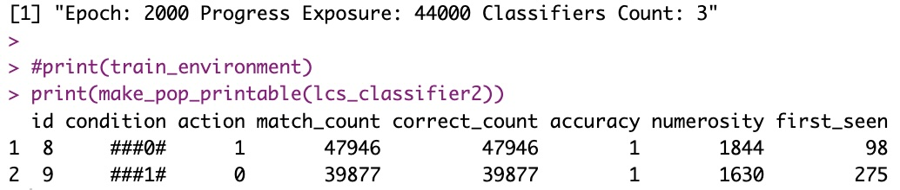
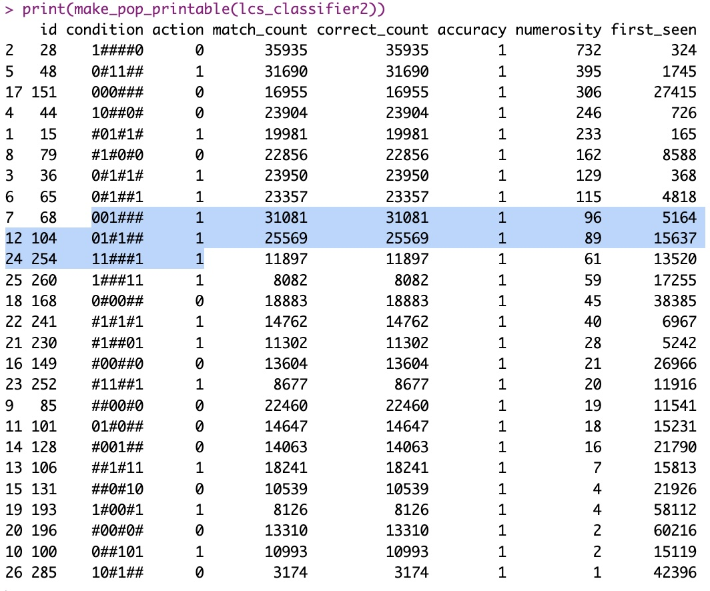
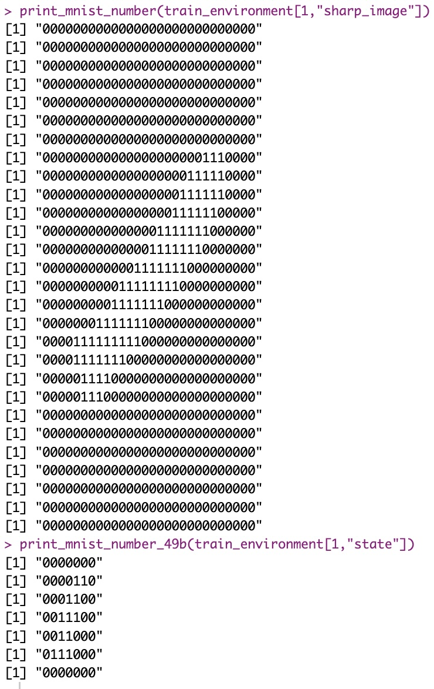
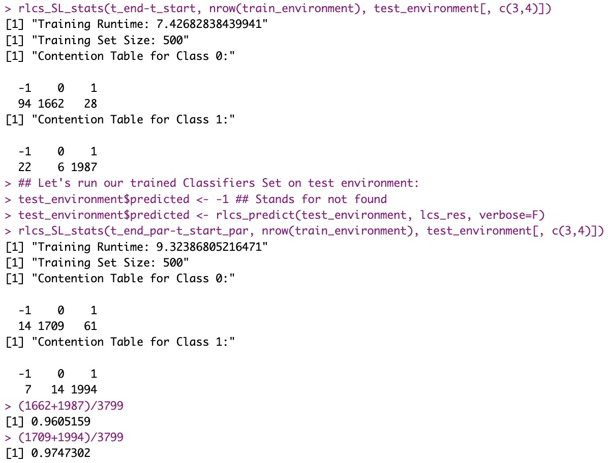
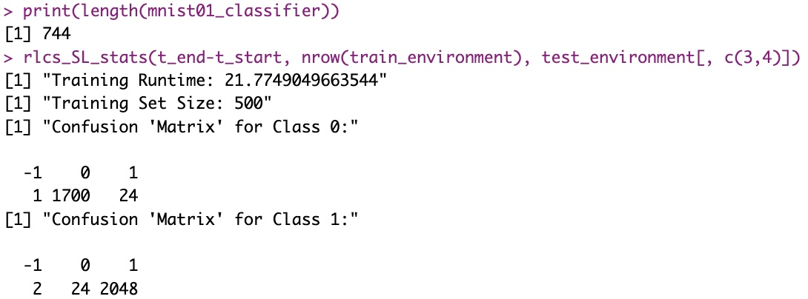
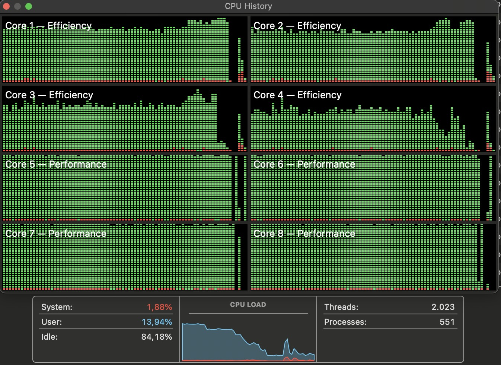

Big update today
Intro: Imperfect but very cool
Version “0” is done and working. And I will say this, it is already showing some of its power. Let me show you.
What’s in it
Alright so this is what I have so far:
A basic, fully functional, Michigan-style LCS for Supervised Learning
A wrapper makes it easier to call the thing for training
GA (tournament-based parents selection, one-point cross over reproduction, simple mutation) and Covering for rules discovery
Deletion was somewhat fixed
Accuracy and other stats work
Printing support functions
New: It includes subsumption. But calling subsumption affects performance – both ways – depending on the when/where/how, a known fact. But when used – and that’s an important running decision, by the way –, it condensates the relevant information encoded in the system… Making it, when applicable, much better!

subsumption and deletion are costly, but effective to contain the size of the system New too: Testing can be called now too, which is very helpful to validate the value of the LCS
This LCS for SL accepts an environment that, importantly, currently supports only:
Binary classes/actions (so 0 or 1)
Binary strings as input/states (no more no less) (and I mean, strings)
All states must be of equal length (whatever that is)
That’s on the plus side. On the not-so-great, well:
Little-to-no error control in there yet
Next-to-zero documentation so far
And I’ll make a note on performance later in this post.
Imperfect/still-a-bit-disorganized code is probably an understatement.
But that’s just what needs to happen next, I guess. Now on to what you can do with this thing.
Test 1: Not bit 4
So I’ve already shown that one, but it wasn’t “perfect”. Here the new version and a few tricks allow me to show how the LCS can be used for data mining.
So I give it 70% of the sample space, and it comes up with the following “Classifiers Set”:

Notice how this is quite exactly what the LCS was supposed to try and discover. And also how it indeed tells us what that particular “environment” (dataset and its classes) is all about.
(Oh, and in this particular exercise, I really did not need to run so many epochs, it’s just my default hyperparameter setting, but after a hundred or so epochs, it was already done.)
Let’s move to a more interesting example.
Test 2: Mux6
The “Introduction to Learning Classifier Systems” book – referenced in my first post on LCS – explains the algorithm with (among much more explanations) one particular example, called a “6-bit multiplexer”.
The rules of that particular example are like so:
you get a string of 6 bits as input
the first two bits point to an address in the resting 4 bits
the “class” of your classifier should be whatever the bit is at the designated address.
A couple of examples:
“010000” says “Bit 2 of the last 4 bits is the class, so 0”
“110001” says “Bit 4 of the last 4 bits is the class, so 1”
“101101” says “Bit 3 of the last 4 bits is the class, so 0”
…
You get the idea. One aspect of this is meant to show that the LCS SL can somehow recognize things that are interrelated in the data, here how two different parts interact. They call this “epistasis”. For now, suffice to say, it’s a bit more interesting use-case and we hope our LCS can discover relevant rules.
Again, with 70% of the whole dataset (64 entries total, for 6 bits), we train our LCS and hope to identify important rules (ideally, up to 8 perfect rules in this case – but that’s not guaranteed). Here I show one such trained Classifier Set (aka “LCS” or “Learning Classifier System”, where the S stands for “System”, implying more than one classifier working together… but I digress) that gets it almost perfect:

You have to look somewhat carefully but you should find 7 of the 8 “perfect” classifiers in there. And I haven’t checked for this particular example, but if the training set (randomly selected) did contain all the needed cases (probably did), this LCS should also almost cover for the missing classifier (11###0 0). Hint, the following would be the only one that would match for that missing classifier, so they would participate to recommend the action/class, and see how they all recommend class 0 (…):
1####0 0
#1#0#0 0
##00#0 0
##0#10 0
So in spite of missing one perfect rule (and that’s also depending on the random environment and non-deterministic nature of the LCS training…), it would work in all testing cases.
Let’s move on to a (much) harder use-case.
Test 3: MNIST!!! (with tricks)
Now this was a stretch. the MNIST dataset is nothing like the dummy tests above, for sure. First, I don’t know how to manually write a perfect program manually for it (the above cases were trivial, comparatively).
Second, many trained neural nets on the MNIST dataset don’t get perfect record (but that’s understandable, if you spend enough time with that dataset).
Third, and quite important, the “states” here are numerical strings representing the shade (black-white) of 784 pixels (28*28) integers between 0 and 255. With a simple binary transformation I could end up with my states represented each as 6272 binary strings (8 bits per pixel).
And there are a few thousand entries (samples) per represented number.
I knew upfront, doing thousands of exposures per sample to get anywhere would take forever.
Fair enough, and so I simplified the problem first. Here is what I did:
Compress the data, from shades to 0-1 values per pixel. I used a threshold to “sharpen” the dataset, so only if the value was > 100 (out of 255) I would set my new pixel to 1, otherwise I set it to 0.
Compress further, from 28*28 to 7*7 pixels. Each original 4-pixels-square is encoded as only 1 pixel, with value 1 if any of the 4*4 subsquare was one, 0 otherwise.
The above gives me 7*7 binary strings, so my states are now 49 bits long.

I “compress” the MNIST data before training my LCS Class stays the same, but I also will do a simpler exercise. My LCS should distinguish between classes 0 and 1 only. (This is not an issue, it’s a choice. I just choose to keep things simple, that’s all, but the value of the approach is the same, think of it as a one-versus-rest approach if you want). This is in part to make things faster, and in (big) part because the code so far only allows two-classes-output only.
Let me skip directly to the results here:

(BTW, I meant to write “confusion matrix”, not “contention table” above, obviously… Apologies, I hadn’t slept much yesterday…)
I just want to make this clear:
Training on a total 500 random (sampled) training inputs only (that’s the size of my environment here), so roughly 250 examples of pictures of Zero and 250 of One
Training on these 500 examples takes me between 7.4 and 9.3 minutes (in the above example)
It generalizes very well: I end up with an LCS that correctly classified 96 to 97+% of the 3799 sample tests.
EDIT: Small changes, good perf gains
Just FYI, I worked a bit more (31/12) on this and reduced the running times for better results in just above 20 seconds for the mono-thread version:

This gives us in fact 98.6+% of correctly classified test samples after 20s training (still on only 500 training samples)!
Performance
One thing that has worried me the past few days, something I actually knew was a concern with LCS, was performance. I mean speed, here. (SEE EDIT ABOVE before you continue)
Training requires exposing the LCS to sufficient training instances to “represent” the overall data. Here I believe, in LCS in particular, too many training instances would hinder training because of the speed of processing power needed. I truly believe better chosen training instances are more important than more training instances. Kinda contrary of what Deep Learning would have you think. Although, this belief is, right now, just that: A belief.
LCS on the other hand, for each training instance, require a lot of “epochs”, so seeing the same data quite a few times. That is because after covering, the GA kicks in and that happens with choosing what best rules are available, which are evolved over time and where “best” depends on how many matches, how general but specific enough a rule is, whether a rule not only matches but also returns the correct action… The point is, ideally, you want to train your LCS on a dataset, but circle over that dataset many times. I’m talking, thousands of times ideally - for each entry.
The other aspect of it is, of course, choosing R as a programming language. As much as I am comfortable with it, it is a slow language, if you consider compiled alternatives and such.
I wanted to dive a bit into the details of what in my current (basic) implementation I could do, and so I ran the thing through “profvis” quite a few times, separate functions at separate times, then overall, with larger problems, etc.
One thing I do a lot, because I’m using lists for everything right now, is use “lapply()” (and al.). I have tried as much as I could to not use dependencies if I could avoid it. So much so, I believe the only actual dependency I have is the plyr package for the rbind() function, and that’s for printing stuff…
Not having too many dependencies is partly motivated by my end goal of producing a package, which I’d like to make “light” as much as possible.
Anyhow, so I use lapply() a lot, but I have also used %in% quite a few times. And in some cases, I mix both and check quite a few instances, quite a few times!
Matching, which happens a lot, for instance, can have an impact:

Nico’s trick: Parallelizing!!
You might know this by now: I like to parallelize stuff over my CPU cores/threads. It’s just a thing I think about when I see my processing times are… Long. Even if long is a few seconds. And here, we’re talking many iterations, which on bigger datasets/longer states means minutes.
(Actually, before I decided to simplify to 49 bits the states of the MNIST exercise, I was working with 784 bits states, and well, it would NOT converge after several minutes…)
Well, I have to keep working on this, but the cool thing is, an LCS can be pre-trained, and then re-trained.
So the LCS (in supervised learning setting for now) is nothing but a set of classifiers, which are rules learnt from examples. You can improve it by exposing it, simply, to more examples. Or let it run more iterations over the same examples!
Either are valid approaches.
Now… What if I “sharded” my data? Say, if I have 7 CPU cores…
I could do one shorter run over all the data to generate a first ruleset. I could then use at the same time that pretrained LCS, and what if I trained 7 sub-LCS on 7 subsets of the data for more iterations (quite a few more epochs now, but in parallel, each on smaller data samples)?
What if then I loop over that, with some sort of “compaction” of the 7 newly re-trained sub-LCS and generate a new single base LCS, to then re-distribute to 7 sub processes.
What if I did that a few times?
I still have to think (seriously, and hard) through all the implications of the simple “algorithm” I just proposed above. I came up with it quite independently, mind you. And maybe it’s a very bad idea. (not showing all the training examples hinders the selection and then generalization of classifiers, for one… So maybe it’s a stupid idea… I just haven’t thought it through yet. For now I do think maybe it does in fact kinda make sense.)
BUT, I have done it already! One version of my code allows for parallel processing like just described.
And well, in (quite a few) tests with the MNIST example above, for roughly the same overall runtimes (and “compaction” is costly!) I get a gain of 1-2% of correctly classified samples.
From 96% to 97+%. (It might sound marginal, and indeed I’m talking about a LOT more processing, but the same runtimes with marginal gains in such near-100% ranges, sounds like potentially valuable).
Well, indeed, I’ve done that too:

Next Steps: “Packaging”
So I’ve got all the pieces of the puzzle. And it works. And I have validated some marvellous (to me) results. All in a few days.
Well, not a “few days”. See, I’ve coded for only a few hours maybe, but I’ve been thinking about this for a long time. And I also think it’d be unfair to say I was fast: Coding time per-se doesn’t account for waking up in the middle of the night coming up with my own design to approach the MNIST example. Waking up in the middle of the night, when I have a project like this, somehow happens more often. I have a bit of insomnia, but these projects make it worse, although they also make me more… Productive.
I guess what I’m saying is: coding time might not have been too many hours. But thinking time, or “obsessing” (rather) did account for much more than 4 or 5 days (in 4 to 8h/day). I mean, I have designed everything in between the days of coding, and that started long before.
Anyhow, to the next step: Moving from a few functions and examples to an actual Package!
That’s what I’ll be up to when I next have time to dedicate to this.
A few days off
Well, that is, indeed, when I next have the time. I’ll be disconnecting for a couple of weeks during January. I simply have other personal priorities (all great).
So I’ll take this where I left it maybe a bit later. No matter. I have gone through half the book of packages, and I actually am more convinced than ever that this is the perfect opportunity to create a package for me.
Conclusion
Well, I am just so… Proud of this thing already!
See I had only ever read about the idea until… Well, basically a week ago. Thanks to the holiday season, and long week-end hours, I can now say I have a working LCS in R.
Not only that:
I know it’s already not too bad in terms of what you could expect about performance. I know (from profiling) where I could try to go RCpp. I also have ideas to run it in more “highly” parallel setups. With more cores on a machine, or… More machines! (plumbeR, here I come… Well, later though, that’s not urgent)
But I also know, if I can “encode” a problem into a binary string for binary classification, it turns out LCS are a very valid idea to consider! Just as good as a Neural Network! Heck, in some cases, better!
I have done some testthat() already, I have several separate functions, very few (almost none) dependencies, the thing is somewhat organized… So the next step comes rather naturally.
Anyhow, overall, I am happy to report, I do believe this (future) package can prove very valuable to the community!
And at this stage, I already hope I can explain that in future forums - I will convince people, I’m sure of it.
So this is turning out to be as great a project as I had (unreasonably) imagined already a long time ago. Which, let me tell you, is very satisfying at a very personal level.
References
Again, if some keywords above are confusing, the how of the algorithm is neatly explained in this 12’ video, which I highly recommend.